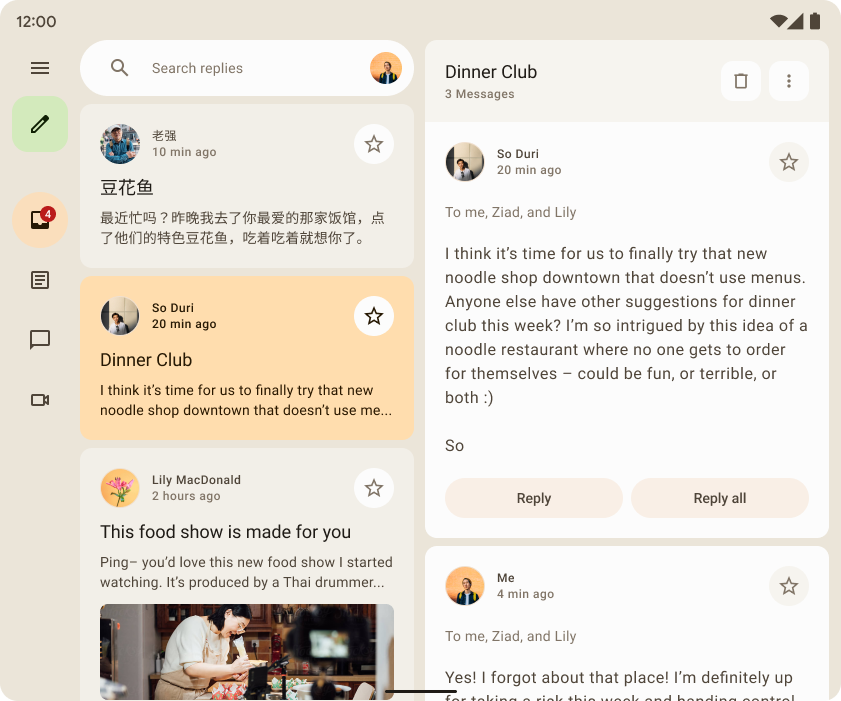
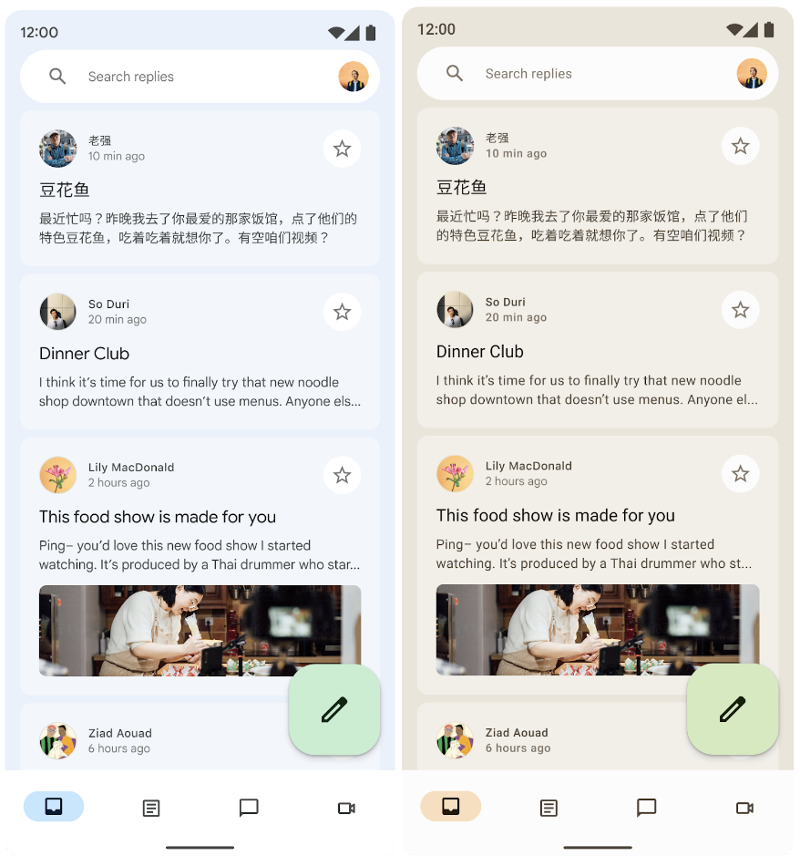
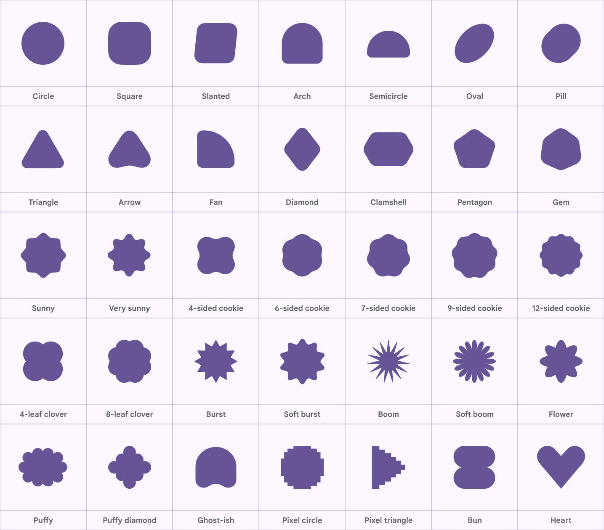

01 / 完整界面
Reply：颜色承担信息层级
观察侧栏、选中项、内容面和主要操作之间的关系。

已取得官方配色实例、动态主题对照、35 种几何图形及原生源码。下图均为 Google 官方原图；本页是参考板，不是 UTvTU 产品截图或下一版界面设计稿。
观察侧栏、选中项、内容面和主要操作之间的关系。

取色后，背景、容器、选中项及操作一起建立新的关系。

对 UTvTU 的启发：提供明确的主题来源，并验证整套语义角色。Android 壁纸取色机制不能直接套到 Windows。
Google / Android Developers · 原图未经修改。参照同一来源页的许可说明。
官方提供归一化的 RoundedPolygon 图形和 Morph 变形入口。原图用于比较观感，原始 Kotlin 参数才是后续移植的几何依据。
欢迎页、无工程空状态、渲染完成状态、音源封面的局部容器。图形应帮助识别功能与状态。
音符、时间轴、自动化曲线与频谱继续使用精确几何。基础控件优先建立统一的形状尺度，避免大量装饰增加视觉噪声。
当前 AndroidX API 标注为实验性。Avalonia 实现需要保留坐标、圆角与平滑参数；本次未移植、未从 PNG 描摹。
Google / Android Developers · 原图未经修改。AndroidX 源码 Apache-2.0，原版权头保留；抓取日期及 SHA-256 已记录。真实动态角色已安装；产品仍固定 Tonal Spot 与六个种子选项，容器强调的使用缺少统一策略。
不同主题的默认高度、圆角、悬停反馈并存；工具操作普遍使用中性填充，主次动作需明确。
8、12、999 圆角广泛散落。形状应按密度、分组、选中和状态定义，再加入少量表达图形。
时长令牌未被实际引用，空间与效果动画未分类；减少动效规则尚未覆盖全部菜单与控件过渡。
查看邮件发送动作前后对比及 Expressive 界面。研究也提示，表达强度必须服务任务与产品语境。
官方区分 spatial 与 effects，并提供不同速度及 Standard / Expressive 方案。建议 DAW 采用 Standard，关键任务反馈局部增强。
参考 Material Symbols 的尺寸、字重与填充状态思路。UTvTU 的现有原生图标和品牌几何仍可继续使用。